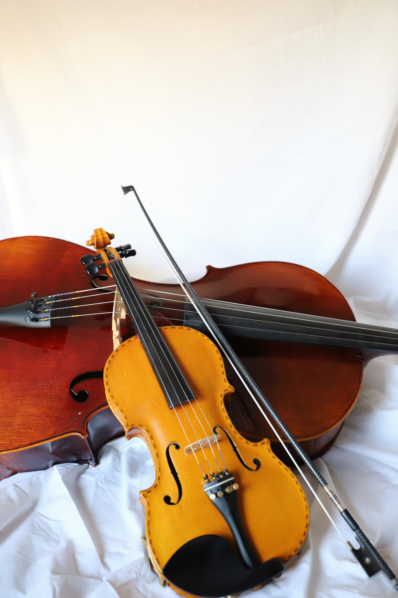

Instrument Information
Where can I get an instrument?
This can be a tricky question to answer, but there are ways to answer it. We have a limited amount of instruments that are available for rental. Also, you may know a friend who has an old violin, viola, cello, or bass that is not being used who would let you use it until you are able to purchase one of your own, if you so chose to go that route. There are several businesses, local and online, from which you can rent or buy an instrument.
|
Easey Strings Rental Fees:
violin: $25/ month
cello: $35/ month |
 |
Note: The bass instrument is to be provided by the student.
- These are gently used instruments that are good starter instruments for young students.
- These are to function solely as temporary rentals until it can be determined by the student/parent if there is an interest in continuing with lessons. If student desires to continue on his/her journey through music, it is highly recommended for you to purchase an instrument from a trusted online source or music store.
- We will gladly offer our advice and help you out-source your instrument.

Note: We do not have an option of providing a rent-to-own contract right now. This rental provides the student with an instrument and covers re-stringing (as needed), bow re-hair (as needed), and general maintenance, provided that the payments are current and the instrument is in good condition. It does not cover repairs that are needed because of neglect or incorrect use of the instrument by the student. If complete loss of the instrument takes place, then the cost to replace the instrument with an instrument of equal caliber will be covered by the renter.
To sign up for lessons, you can click here.